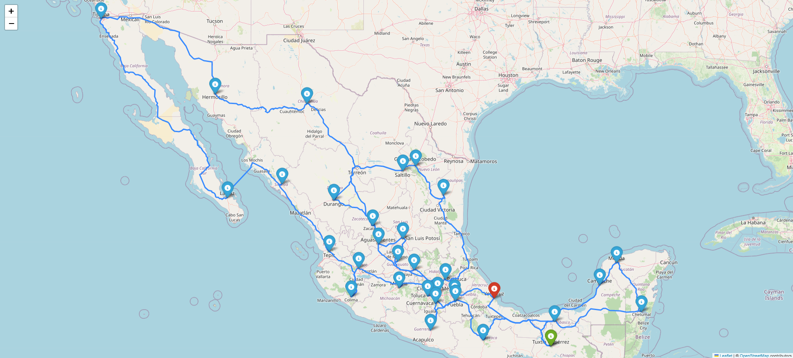
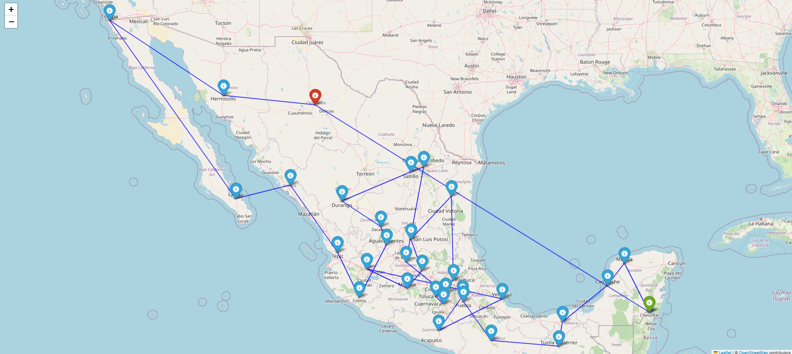

import numpy as npimport pandas as pdimport matplotlib.pyplot as pltfrom mpl_toolkits.mplot3d import Axes3Dfrom matplotlib.animation import FuncAnimationfrom IPython.display import HTMLfrom IPython.display import displayfrom IPython.display import Image as IPImageimport iofrom PIL import Image
1 Optimización Combinatoria
La optimización combinatoria es clave para resolver problemas complejos de rutas y logística. En este artículo, exploraremos cómo el algoritmo de colonia de hormigas, inspirado en la naturaleza, puede abordar el desafío de encontrar la ruta más eficiente para recorrer los estados de México por un vendedor.
1.1 Problema del Viajero:
Un vendedor debe realizar un recorrido por todas las capitales de los 32 estados de los Estados Unidos Mexicanos.
1.1.1 Tareas:
Optimización con métodos metaheurísticos:
Utilice colonias de hormigas para encontrar el orden óptimo del recorrido.
Utilice algoritmos genéticos para encontrar el orden óptimo del recorrido.
Costo del recorrido:
El costo de desplazamiento entre ciudades se calcula como la suma de:
El valor de la hora del vendedor (este es un parámetro que debe estudiarse).
El costo de los peajes.
El costo del combustible.
Cada equipo debe definir el vehículo que utilizará el vendedor para realizar el recorrido y, con base en esta elección, calcular el costo del combustible.
1.1.2 Representación Visual:
Cree un GIF animado o un video que muestre cómo se comporta la mejor solución encontrada, usando un gráfico del recorrido en el mapa de México.
1.1.3 Discusión:
Reflexione sobre: - Los resultados obtenidos con las colonias de hormigas y los algoritmos genéticos. - Comparación de costos y tiempo de ejecución.
1.2 Solución de las tareas propuestas
1.2.1 Extracción de datos
Para empezar a solucionar el problema, es necesario obtener información acerca del valor del salario del vendedor, el costo de los peajes y el cálculo correspondiente al costo total destinado a combustible; definiendo entonces el modelo de automóvil a considerar en el ejercicio, junto con su respectivo costo de gasolina. Durante el desarrollo de este proceso de extracción de información se tomaron como referencia las ciudades capitales de cada uno de los estados mexicanos y se observó el mapa de la división política de México en sus 32 estados, a fin de tener un mejor entendimiento de la región.
Figura 1.
Mapa de México.Nota. El mapa representa cada una de las ciudades capitales del país. Adaptado de Fondo plano de mapa de méxico [Ilustración], por Freepik, 2024, Freepik (https://www.freepik.es/vector-gratis/mapa-mexico). Licencia gratuita.
1.2.1.1 Distancias y tiempo de conducción
La tabla de distancias y tiempo de conducción entre las ciudades fue obtenida a través del sitio web (mejoresrutas2024?), diseñado especialmente para el cálculo y planeación de viajes a lo largo de todo el país. Dicho recurso online permite obtener información como distancias, tiempo de conducción y otros valores asociados entre dos ciudades ingresando el nombre de cada una de ellas.
1.2.1.2 Peajes
Para obtener la información de los peajes, fue utilizado el mismo sitio web (mejoresrutas2024?), el cual también contiene datos relacionados con el costo actual de los peajes que se encuentran entre las ciudades donde se realiza la consulta.
Debido al gran número de combinaciones posibles, se programó un bot en Python empleando la librería Beautiful Soup, lo que permitió automatizar la extracción de la información anteriormente mencionada. En el repositorio en GitHub es posible encontrar el archivo con el código para llevar a cabo esta tarea.
1.2.2 Definición de gastos
En la siguiente sección se definen los gastos que deben ser consultados, entre los cuales se encuentran el salario del vendedor, el modelo de automóvil a utilizar y su correspondiente gasto de combustible.
1.2.2.1 Salario del vendedor
Para definir el salario del vendedor, se toma como referencia el salario minimo en México, que actualmente se encuentra en 248,93 pesos diarios según la (conasami2024?); por lo tanto, para una jornada de 8 horas, el salario mínimo por hora es de 31,12 aproximadamente. Dicho esto, se decide establecer un salario de 35 pesos mexicanos por hora para el vendedor del presente ejercicio.
1.2.2.2 Modelo del carro y gasto en gasolina
De acuerdo con (elpais2024?), el modelo de automóvil más vendido actualmente en México es el Nissan Versa, por lo que se ha considerado conveniente seleccionarlo como medio de transporte a utilizar por parte del vendedor. Esto permitirá hacer una estimación más justa del costo total de realizar la ruta por los 32 estados mexicanos en el contexto de dicho país.
Adicionalmente, es importante considerar que el rendimiento promedio de este modelo en carreteras es de 25 kilómetros por litro de acuerdo con información proporcionada por (nissanversarendimiento2023?) y que el tipo de gasolina que utiliza es la comúnmente denominada como “Gasolina Magna” en México la cual, al día 14 de noviembre, tiene un precio promedio de 23.96 pesos mexicanos por litro según (gasolinamx2024?).
1.2.2.3 Transformaciones
Se ha obtenido la información anterior con el objetivo de calcular el costo total de desplazamiento entre las ciudades capitales de México, sin embargo, se observa que no todos los datos se encuentran en las unidades requeridas (MXN): hay magnitudes en litros, horas, kilómetros, etc. Por lo tanto, se realizarán las siguientes transformaciones en todas las unidades para poder sumar dichos gastos en pesos mexicanos, a diferencia del caso de los peajes, pues estos ya se encuentran en la unidad monetaria deseada.
1.2.2.3.1 Tiempo de viaje
El costo por el salario del vendedor es calculado la forma que se muestra en la Ecuación (1):
Después de realizar las operaciones mostradas anteriormente, se tiene como resultado toda la información necesaria en las unidades requeridas para obtener un valor correspondiente al gasto total del viaje en pesos mexicanos, de acuerdo con lo definido en la Ecuación (3).
A continuación, se procede con la utilización de los algoritmos propuestos para este caso: Colonia de Hormigas y Algoritmos Genéticos, con el fin de responder a la actividad planteada al principio del presente ejercicio, esto es, hallar la ruta óptima para el recorrido del vendedor a través de los 32 estados de México.
1.2.3.1 Colonia de Hormigas
Considerando la información recolectada en (acowikipedia2024?) y (acobook2018?) y lo presentado en la primera sección del trabajo, puede decirse que los algoritmos de colonia de hormigas (Ant Colony Optimization, ACO) son una técnica de optimización basada en la inteligencia colectiva observada en las colonias de hormigas naturales. Fueron inspirados en el comportamiento de las hormigas en la naturaleza para resolver problemas complejos de optimización combinatoria, en esta segunda parte del trabajo profundizaremos más en sus hiperparámetros claves los cuales son:
Cantidad de hormigas: Cantidad de hormigas que participarán en cada iteración de la búsqueda de soluciones. Influye en la capacidad del algoritmo de explorar diferentes soluciones de manera simultánea. En este caso se utilizarán 32 hormigas, es decir, igual al número de estados en México.
Alpha: Controla la influencia de la feromona en la probabilidad de que una hormiga elija ese camino. A medida que el valor aumenta, las hormigas son más propensas a seguir caminos con más feromona. Aquí se utilizará un valor de 1 para otorgar una influencia moderada de las feromonas depositadas.
Beta: Controla la preferencia de las hormigas por caminos más “baratos” o prometedores, lo cual ayuda aumentar la exploración. Se va a considerar un valor de 2, puesto que se busca minimizar el costo del viaje
\(\rho\): Indica la tasa de evaporación de la feromona, lo cual evita que las soluciones previas influencien las iteraciones futuras. Se seleccionó una tasa de evaporación del 0.5, es decir, el 50% de las feromonas se evaporan en cada iteración.
\(Q\): Cantidad de feromona depositada por una hormiga en su recorrido tras encontrar una solución. Se utilizará un valor de 100 para indicar la cantidad de feromonas en el camino.
Una vez definidos los hiperparámetros, se puede continuar con la ejecución del algoritmo de colonia de hormigas, cuyo detalle se puede observar más a profundidad en el repositorio de GitHub. En la Figura 2 se puede observar cómo va variando el costo de realizar el viaje en cada una de las iteraciones que realizó dicho algoritmo.
Figura 2.
Función costo del algoritmo Colonia de Hormigas.Nota. La gráfica muestra la evolución del costo total del viaje a medida que se ejecutan las diferentes iteraciones del algoritmo, que para este caso fueron 500. Elaboración propia.
De acuerdo con la imagen anterior, es posible observar que el costo mínimo se alcanza relativamente rápido, antes de las 100 iteraciones. En este sentido, también es interesante notar que el cálculo de esta función de costo varía al considerar diferentes variaciones que puedan realizarse sobre el planteamiento inicial del problema, comportamiento que se verá más adelante.
Posteriormente, en la Figura 3 puede verse la ruta óptima encontrada por el algoritmo de colonia de hormigas para que el vendedor pueda recorrer los 32 estados mexicanos.
Figura 3.
Ruta óptima encontrada mediante el algoritmo de Colonia de Hormigas.Nota. Puede observarse que esta visualización gráfica está dada por líneas rectas entre cada una de las ciudades y no muestra con fidelidad la forma en que se haría el recrorrido. Elaboración propia.
Con el fin de que el camino óptimo pueda reflejar la realidad del viaje, en la Figura 4 se ilustra la utilización de la API gratuita Open Route Service para graficar el recorrido propuesto a lo largo de las carreteras en el mapa de México. La API key para acceder a este servicio es la siguiente:
Forma realista del camino óptimo encontrado mediante el uso del algoritmo de Colonia de Hormigas.  Nota. El gráfico muestra las carreteras que deberían seguirse para completar el recorrido propuesto, sin embargo, algunos aspectos siguen siendo siendo interesantes. Elaboración propia.
Como se mencionó anteriormente, de esta forma se obtiene una ruta óptima más realista. No obstante, llama la atención que, en ciertas secciones, la ruta implica cruzar cuerpos de agua. Al investigar las razones de este comportamiento, se descubrió que para conectar algunos estados del país como Baja California Sur y Sinaloa, la opción de tomar un ferri es considerada la más conveniente según servicios de planificación de trayectos como (mejoresrutasferri2024?) y (bajaferries2024?).
Dado que la matriz de costos actual no considera el valor asociado al uso del ferri ni los gastos asociados al transporte del vehículo para continuar posteriormente el recorrido, se propone un análisis de los siguientes escenarios:
Incluir el costo del ferri en la matriz de costos y evaluar la ruta resultante.
Realizar el viaje completamente por tierra, excluyendo los estados que se alcanzan únicamente utilizando el ferri.
Primer escenario
Se consultó el valor del tiquete de ferri para una persona adulta y el costo del transporte de un automóvil, encontrando que el más económico para un adulto es de 1,460 pesos mexicanos, mientras que el transporte del automóvil tiene un valor de 5,480 pesos mexicanos según (debate2023?).
Estos costos fueron utilizados como parámetros para el algoritmo de colonia de hormigas, llegando a que, como se observa en la Figura 5, el algoritmo sigue alcanzando un mínimo de manera relativamente rápida.
Figura 5.
Evolución de la función costo del algoritmo de Colonia de Hormigas teniendo en cuenta al ferri.Nota. Es interesante notar que, a pesar del incremento en el costo de moverse entre dos estados (debido al ferri), el algoritmo logró encontrar una ruta más barata que la hallada originalmente. Esto sugiere que en la primera solución encontrada el algoritmo podría haberse quedado atascado en un mínimo local debido a la falta de iteraciones. Elaboración propia.
Además, también es posible observar que el tiempo y la distancia se redujeron en esta nueva solución, lo cual permite pensar que esta ruta no solo es más económica, sino también más eficiente, a pesar de que está considerando el costo adicional del ferri y el transporte del vehículo.
Los resultados correspondientes a la visualización gráfica del camino óptimo encontrado para el vendedor en este escenario pueden observarse a continuación, en las Figuras 6 y 7.
Figura 6.
Ruta óptima encontrada mediante el algoritmo de Colonia de Hormigas teniendo en cuenta el costo del ferri.. Nota. Las observaciones respecto a la forma en que se conectan los distintos puntos del recorrido permanecen iguales que en el caso considerado originalmente. Elaboración propia.
Figura 7.
Carreteras encontradas mediante el uso del algoritmo de Colonia de Hormigas.Nota. Esta imagen también fue generada por medio del uso de la API gratuita, así que sus resultados son reproducibles. Elaboración propia.
Segundo escenario
En este segundo escenario, la ciudad de La Paz fue eliminada del recorrido, por lo que el viaje ahora solo incluye los 31 estados restantes. En consecuencia, también se redujo la cantidad de hormigas utilizadas en el algoritmo a un valor de 31, asignando una hormiga por estado para realizar la búsqueda.
Como era de esperarse, el precio del recorrido se redujo en este caso. Sin embargo, al algoritmo le tomó muchas más iteraciones encontrar el costo mínimo, como se observa en la Figura 8.
Figura 8.
Evolución de la función costo para los 31 estados de México.Nota. El hecho de que el planteamiento inicial de ciudades y estados a recorrer cambiara al no tener en cuenta el estado que solamente puede ser conectado vía marítima fue un factor determinante en la ejecución del algoritmo de hormigas, siendo mucho menos rápido que en el primer escenario (incluso que en el escenario original). Elaboración propia.
A diferencia del caso anterior, la Figura 8 también muestra que la distancia y el tiempo aumentaron. Esto se debe a que, al no utilizar el ferri, el automóvil tuvo que realizar un recorrido más largo en ciertas partes para completar su ruta. Por lo tanto, aunque esta solución es más eficiente en términos de costo, no lo es en términos de tiempo y distancia recorrida.
La visualización gráfica de los resultados obtenidos para este caso pueden observarse en las Figuras 9 y 10, teniendo en cuenta las mismas consideraciones anteriormente mencionadas.
Figura 9.
Ruta óptima encontrada mediante el uso del algoritmo de Colonia de Hormigas para 31 estados de México. Elaboración propia.
Figura 10.
Orden de las carreteras encontrado mediante el uso del algoritmo de Colonia de Hormigas para 31 estados de México.Nota. Sumado a los inconvenientes observados en este escenario, al desconectar uno de los estados de México, puede observarse que una gran región del país queda excluida del recorrido del vendedor, lo que puede implicar significativas pérdidas económicas y oportunidades de establecer nuevos negocios.
1.2.3.2 Algoritmo genético
De acuerdo con información proporcionada por (tesisga2009?) y encontrada en (gawikipedia2024?), y como se explico en la primera sección del trabajo, puede decirse que los algoritmos genéticos (Genetic Algorithms, GA) son una técnica de optimización inspirada en los principios de la selección natural y la evolución biológica. Los GA buscan soluciones óptimas mediante la creación, evaluación y modificación de una población de individuos, representando posibles soluciones a un problema dado. La evolución de la población se realiza mediante operadores genéticos como la mutación y en esta sección profundizaremos más en sus hiperparámetros clave, los cuales son:
Tamaño de la población: Define el número de individuos en cada generación. Un tamaño de población más grande permite una mejor exploración del espacio de soluciones, pero también aumenta el tiempo de cómputo. En este caso, se utilizará una población de 100 individuos, lo que proporciona un equilibrio adecuado entre diversidad y eficiencia computacional.
Número de generaciones: Especifica cuántas veces se evolucionará la población mediante el proceso de selección, cruce y mutación; se consideran adecuadas un total de 200 generaciones para permitir al algoritmo explorar el espacio de búsqueda y converger hacia una solución óptima o cercana al óptimo.
Tasa de mutación: Representa la probabilidad de que un gen sea modificado aleatoriamente en un individuo. La mutación introduce variación genética, lo que ayuda a explorar nuevas áreas del espacio de búsqueda y a evitar estancamientos en óptimos locales. Se empleará una tasa de mutación de 0.1 (10%), lo que mantiene una buena cantidad de diversidad sin perturbar excesivamente a la población.
De la misma manera en que se realizó en la sección anterior, la presentación de resultados comienza con una obtención de resultados iniciales considerando los 32 estados de México y sin tener en cuenta el costo del ferri.
Como se observa en la Figura 11, alcanzar el mínimo toma casi 175 generaciones, lo que indica que este algoritmo se demora más en llegar a un valor mínimo en comparación con el algoritmo de colonia de hormigas. Además, la solución que encuentra tiene un costo mayor y toma más tiempo y una mayor distancia completarla.
Figura 11.
Evolución de la función costo del algoritmo genético.Nota. En la ejecución de este algoritmo, la solución óptima se encontró en una iteración muy cercana al límite máximo establecido, a diferencia del algoritmo de colonia de hormigas, que lo realizó muy rápidamente. Elaboración propia.
Ahora bien, en las Figuras 12 y 13 se tiene la visualización gráfica del recorrido propuesto por este algoritmo, siguiendo los mismos procedimientos de utilización de la API que se mencionaron de manera previa.
Figura 12.
Ruta óptima encontrada mediante algoritmo genético.  Elaboración propia.
Figura 13.
Ruta óptima con las carreteras encontrada mediante algoritmo genético. Elaboración propia.
Nuevamente, se considera pertinente considerar los dos escenarios adicionales de análisis: un nuevo cálculo de costos teniendo en cuenta el tiquete de ferri y el transporte adicional para el automóvil y la exclusión La Paz, como territorio que solo puede conectarse a través de cuerpos de agua.
Primer escenario
Es posible observar que al tomar en cuenta el costo del ferri, en este caso sí se aumenta el costo del camino óptimo y el número de iteraciones se reduce un poco, como puede verse en la Figura 14. Sin embargo, el tiempo que toma completar esta ruta es mucho más alto que en el caso anterior, lo que podría indicar que esta solución se quedó atrapada en un mínimo local.
Figura 14.
Evolución de la función costo del algoritmo genético teniendo en cuenta el costo del ferri. Elaboración propia.
Por otra parte, en las Figuras 15 y 16 se puede observar el recorrido propuesto por esta solución del algoritmo para que el vendedor se desplace por todo el país, viendo que los puntos de inicio y finalización son diferentes a los que había arrojado como resultado el algoritmo de colonia de hormigas.
Figura 15.
Ruta óptima encontrada mediante algoritmos genéticos teniendo en cuenta el costo del ferri.Nota. Sabiendo que la ruta marítima que seleccionaron ambos algoritmos es la misma, puede decirse que las diferencias entre sus resultados radican en otros aspectos inherentes a su propia definición, como pueden serlo los hiperparámetros y la forma en que realizan una búsqueda de la solución óptima. Elaboración propia.
Figura 16.
Ruta óptima de carreteras encontrada mediante algoritmo genético teniendo en cuenta el costo del ferri.Nota. La utilización de la API se dio exactamente igual que en los escenarios anteriores, de manera que estos resultados también son reproducibles.
Segundo escenario
En este último escenario, el cual solamente considera 31 de los estados de México, es posible notar que el costo óptimo nuevamente bajó y, a diferencia del algoritmo de colonia de hormigas, el algoritmo genético sí encuentra una forma de reducir el tiempo y la distancia del recorrido, mostrando una mejoría en ese aspecto.
De acuerdo con la Figura 17, en este escenario el algoritmo genético necesitó más iteraciones para encontrar un mínimo, lo cual se ve compensado por el hecho de que mejoró el desempeño del algoritmo de colonia de hormigas en términos de las variables anteriormente mencionadas.
Figura 17.
Evolución de la función costo del algoritmo genético cuando se tienen en cuenta 31 estados de México. Elaboración propia.
Finalmente, las Figuras 18 y 19 permiten observar el recorrido que debería realizar el vendedor de acuerdo con este escenario propuesto, en el que también queda aislada una amplia región del país debido a la decisión de no considerar recorridos que no fueran terrestres.
Figura 18.
Ruta óptima encontrada mediante algoritmos genéticos teniendo en cuenta solo 31 estados de México. Elaboración propia.
Figura 19.
Ruta óptima de carreteras encontrada mediante algoritmos genéticos teniendo en cuenta 31 de los estados de México.Nota. Al observar las carreteras que debería recorrer esta solución, puede observarse que el vendedor terminaría pasando por los mismos caminos varias veces, ya que deben darse varios recorridos de manera repetida por la necesidad de conectar algunos territorios de los 31 estados sin contemplar la opción del viaje en ferri. Elaboración propia.
1.2.4 Verificación de la calidad de la solución
Es importante evaluar qué tan buena es la solución alcanzada. Métodos exhaustivos como la fuerza bruta, que permiten comprobar cuál es la mejor solución entre todas las posibles, resultan computacionalmente inviables en este caso. Aprovechando que disponemos de un gran número de iteraciones y tres diferentes escenarios que nos permiten variar las condiciones del problema, podemos concluir que la solución obtenida es, al menos, razonablemente buena.
Además, es relevante analizar el comportamiento de las funciones de costo. En todos los escenarios se observa que el costo se reduce significativamente al principio y luego comienza a fluctuar alrededor de una media estable. Esto indica que el algoritmo está convergiendo hacia esos valores. A partir de este comportamiento, seleccionamos la solución con el menor costo como la mejor alternativa.
En general, las funciones de costo tienden a estabilizarse dentro de un rango limitado de valores. Este patrón nos permite confiar en que las soluciones obtenidas se encuentran entre las mejores posibles, considerando las limitaciones inherentes a los métodos no determinísticos.
1.2.5 Discusión de los resultados
Los resultados obtenidos al aplicar el Algoritmo de Colonia de Hormigas y el Algoritmo Genético en tres situaciones diferentes permiten destacar las fortalezas y diferencias de cada uno. Por un lado, el Algoritmo de Colonia de Hormigas logra encontrar una solución más económica y en un menor número de iteraciones en comparación con el Algoritmo Genético. Por lo tanto, en esta evaluación específica, dicho algoritmo puede considerarse más eficiente para resolver el problema en esta situación particular.
No obstante, es importante señalar que la elección del algoritmo adecuado depende en gran medida de la naturaleza del problema. Incluso para un mismo problema, diferentes enfoques pueden llevar a variaciones significativas en los resultados, como se observó en este análisis. Aunque en este caso el Algoritmo de Colonia de Hormigas demostró ser más eficiente que el Algoritmo Genético, esta ventaja es altamente circunstancial y no necesariamente aplicable a todos los contextos. Esto refuerza la importancia de adaptar la metodología a las características específicas del problema a resolver.
En la figura 20 y 21 podemos encontrar las soluciones encontradas con algoritmo de colonia de hormigas y algoritmo genético.
Figura 20
Las tres soluciones obtenidas mediante el algoritmo de colonia de hormigas para la optimización de la ruta en las carreteras identificadas son las siguientes:
Las 3 rutas encontradas mediante el algoritmo de colonia de hormigas
Las tres soluciones obtenidas mediante el algoritmo genético para la optimización de la ruta en las carreteras identificadas son las siguientes:
Las 3 rutas encontradas mediante el algoritmo genético
Source Code
---title: "Algoritmo de colonia de hormigas para el problema del vendedor viajero"format: html: fig-width: 8 # Ancho de las figuras en pulgadas para HTML fig-height: 6 # Alto de las figuras en pulgadas para HTML number-sections: trueauthor: - name: "Julián Castaño Pineda" - name: "Luis Andrés Altamar Romero" - name: "Catalina Restrepo Salgado" - name: "Tomás Rodríguez Taborda"date: "2024-11-15"categories: [optimización, métodos heurísticos, python]image: "image.jpg"bibliography: ref.bibexecute: cache: true---```{python}import numpy as npimport pandas as pdimport matplotlib.pyplot as pltfrom mpl_toolkits.mplot3d import Axes3Dfrom matplotlib.animation import FuncAnimationfrom IPython.display import HTMLfrom IPython.display import displayfrom IPython.display import Image as IPImageimport iofrom PIL import Image```# Optimización CombinatoriaLa optimización combinatoria es clave para resolver problemas complejos de rutas y logística. En este artículo, exploraremos cómo el algoritmo de colonia de hormigas, inspirado en la naturaleza, puede abordar el desafío de encontrar la ruta más eficiente para recorrer los estados de México por un vendedor.## Problema del Viajero:Un vendedor debe realizar un recorrido por **todas las capitales** de los **32 estados** de los **Estados Unidos Mexicanos**.### Tareas:1. **Optimización con métodos metaheurísticos:** - Utilice **colonias de hormigas** para encontrar el orden óptimo del recorrido. - Utilice **algoritmos genéticos** para encontrar el orden óptimo del recorrido.2. **Costo del recorrido:** - El costo de desplazamiento entre ciudades se calcula como la suma de: - El valor de la **hora del vendedor** (este es un parámetro que debe estudiarse). - El **costo de los peajes**. - El **costo del combustible**. - Cada equipo debe definir el **vehículo** que utilizará el vendedor para realizar el recorrido y, con base en esta elección, **calcular el costo del combustible**.### Representación Visual:- Cree un **GIF animado** o un **video** que muestre cómo se comporta la **mejor solución** encontrada, usando un **gráfico del recorrido** en el mapa de México.------------------------------------------------------------------------### Discusión:Reflexione sobre: - Los resultados obtenidos con las **colonias de hormigas** y los **algoritmos genéticos**. - Comparación de costos y tiempo de ejecución.## Solución de las tareas propuestas### Extracción de datosPara empezar a solucionar el problema, es necesario obtener información acerca del valor del salario del vendedor, el costo de los peajes y el cálculo correspondiente al costo total destinado a combustible; definiendo entonces el modelo de automóvil a considerar en el ejercicio, junto con su respectivo costo de gasolina. Durante el desarrollo de este proceso de extracción de información se tomaron como referencia las ciudades capitales de cada uno de los estados mexicanos y se observó el mapa de la división política de México en sus 32 estados, a fin de tener un mejor entendimiento de la región.**Figura 1.***Mapa de México.*  *Nota.* El mapa representa cada una de las ciudades capitales del país. Adaptado de *Fondo plano de mapa de méxico* \[Ilustración\], por Freepik, 2024, Freepik (<https://www.freepik.es/vector-gratis/mapa-mexico).> Licencia gratuita.#### Distancias y tiempo de conducciónLa tabla de distancias y tiempo de conducción entre las ciudades fue obtenida a través del sitio web @mejoresrutas2024, diseñado especialmente para el cálculo y planeación de viajes a lo largo de todo el país. Dicho recurso online permite obtener información como distancias, tiempo de conducción y otros valores asociados entre dos ciudades ingresando el nombre de cada una de ellas.#### PeajesPara obtener la información de los peajes, fue utilizado el mismo sitio web @mejoresrutas2024, el cual también contiene datos relacionados con el costo actual de los peajes que se encuentran entre las ciudades donde se realiza la consulta.Debido al gran número de combinaciones posibles, se programó un bot en Python empleando la librería *Beautiful Soup*, lo que permitió automatizar la extracción de la información anteriormente mencionada. En el repositorio en GitHub es posible encontrar el archivo con el código para llevar a cabo esta tarea.### Definición de gastosEn la siguiente sección se definen los gastos que deben ser consultados, entre los cuales se encuentran el salario del vendedor, el modelo de automóvil a utilizar y su correspondiente gasto de combustible.#### Salario del vendedorPara definir el salario del vendedor, se toma como referencia el salario minimo en México, que actualmente se encuentra en 248,93 pesos diarios según la @conasami2024; por lo tanto, para una jornada de 8 horas, el salario mínimo por hora es de 31,12 aproximadamente. Dicho esto, se decide establecer un salario de 35 pesos mexicanos por hora para el vendedor del presente ejercicio.#### Modelo del carro y gasto en gasolinaDe acuerdo con @elpais2024, el modelo de automóvil más vendido actualmente en México es el Nissan Versa, por lo que se ha considerado conveniente seleccionarlo como medio de transporte a utilizar por parte del vendedor. Esto permitirá hacer una estimación más justa del costo total de realizar la ruta por los 32 estados mexicanos en el contexto de dicho país.Adicionalmente, es importante considerar que el rendimiento promedio de este modelo en carreteras es de 25 kilómetros por litro de acuerdo con información proporcionada por @nissanversarendimiento2023 y que el tipo de gasolina que utiliza es la comúnmente denominada como "Gasolina Magna" en México la cual, al día 14 de noviembre, tiene un precio promedio de 23.96 pesos mexicanos por litro según @gasolinamx2024.#### TransformacionesSe ha obtenido la información anterior con el objetivo de calcular el costo total de desplazamiento entre las ciudades capitales de México, sin embargo, se observa que no todos los datos se encuentran en las unidades requeridas (MXN): hay magnitudes en litros, horas, kilómetros, etc. Por lo tanto, se realizarán las siguientes transformaciones en todas las unidades para poder sumar dichos gastos en pesos mexicanos, a diferencia del caso de los peajes, pues estos ya se encuentran en la unidad monetaria deseada.##### Tiempo de viajeEl costo por el salario del vendedor es calculado la forma que se muestra en la Ecuación (1):$$ \text{Costo\_vendedor} = \text{tiempo} \times \text{salario\_del\_vendedor} \tag{1}$$#### Gasolina para el viajeEl gasto total en gasolina se obtiene con la fórmula mostrada en la Ecuación (2):$$ \text{Costo\_gasolina} = \left( \frac{\text{Distancia}}{\text{Rendimiento (km/litro)}} \right) \times \text{Precio\_por\_litro} \tag{2}$$##### Gasto totalDespués de realizar las operaciones mostradas anteriormente, se tiene como resultado toda la información necesaria en las unidades requeridas para obtener un valor correspondiente al gasto total del viaje en pesos mexicanos, de acuerdo con lo definido en la Ecuación (3).$$\text{Gasto\_recorrido} = \text{Costo\_gasolina} + \text{Costo\_vendedor} + \text{Costo\_Peajes} \tag{3}$$### Ruta óptimaA continuación, se procede con la utilización de los algoritmos propuestos para este caso: Colonia de Hormigas y Algoritmos Genéticos, con el fin de responder a la actividad planteada al principio del presente ejercicio, esto es, hallar la ruta óptima para el recorrido del vendedor a través de los 32 estados de México.#### Colonia de HormigasConsiderando la información recolectada en @acowikipedia2024 y @acobook2018 y lo presentado en la primera sección del trabajo, puede decirse que los **algoritmos de colonia de hormigas (Ant Colony Optimization, ACO)** son una técnica de optimización basada en la inteligencia colectiva observada en las colonias de hormigas naturales. Fueron inspirados en el comportamiento de las hormigas en la naturaleza para resolver problemas complejos de optimización combinatoria, en esta segunda parte del trabajo profundizaremos más en sus hiperparámetros claves los cuales son:- **Cantidad de hormigas:** Cantidad de hormigas que participarán en cada iteración de la búsqueda de soluciones. Influye en la capacidad del algoritmo de explorar diferentes soluciones de manera simultánea. En este caso se utilizarán 32 hormigas, es decir, igual al número de estados en México.- **Alpha**: Controla la influencia de la feromona en la probabilidad de que una hormiga elija ese camino. A medida que el valor aumenta, las hormigas son más propensas a seguir caminos con más feromona. Aquí se utilizará un valor de 1 para otorgar una influencia moderada de las feromonas depositadas.- **Beta**: Controla la preferencia de las hormigas por caminos más "baratos" o prometedores, lo cual ayuda aumentar la exploración. Se va a considerar un valor de 2, puesto que se busca minimizar el costo del viaje- **\\(\\rho\\)**: Indica la tasa de evaporación de la feromona, lo cual evita que las soluciones previas influencien las iteraciones futuras. Se seleccionó una tasa de evaporación del 0.5, es decir, el 50% de las feromonas se evaporan en cada iteración.- **\\(Q\\)**: Cantidad de feromona depositada por una hormiga en su recorrido tras encontrar una solución. Se utilizará un valor de 100 para indicar la cantidad de feromonas en el camino.Una vez definidos los hiperparámetros, se puede continuar con la ejecución del algoritmo de colonia de hormigas, cuyo detalle se puede observar más a profundidad en el repositorio de GitHub. En la Figura 2 se puede observar cómo va variando el costo de realizar el viaje en cada una de las iteraciones que realizó dicho algoritmo.**Figura 2.***Función costo del algoritmo Colonia de Hormigas.*  *Nota.* La gráfica muestra la evolución del costo total del viaje a medida que se ejecutan las diferentes iteraciones del algoritmo, que para este caso fueron 500. Elaboración propia.De acuerdo con la imagen anterior, es posible observar que el costo mínimo se alcanza relativamente rápido, antes de las 100 iteraciones. En este sentido, también es interesante notar que el cálculo de esta función de costo varía al considerar diferentes variaciones que puedan realizarse sobre el planteamiento inicial del problema, comportamiento que se verá más adelante.Posteriormente, en la Figura 3 puede verse la ruta óptima encontrada por el algoritmo de colonia de hormigas para que el vendedor pueda recorrer los 32 estados mexicanos.**Figura 3.***Ruta óptima encontrada mediante el algoritmo de Colonia de Hormigas.*  *Nota.* Puede observarse que esta visualización gráfica está dada por líneas rectas entre cada una de las ciudades y no muestra con fidelidad la forma en que se haría el recrorrido. Elaboración propia.Con el fin de que el camino óptimo pueda reflejar la realidad del viaje, en la Figura 4 se ilustra la utilización de la API gratuita *Open Route Service* para graficar el recorrido propuesto a lo largo de las carreteras en el mapa de México. La API key para acceder a este servicio es la siguiente:```{python}api_key ="5b3ce3597851110001cf6248c140bc578aac4c2d95295dc798e53a22"```**Figura 4.***Forma realista del camino óptimo encontrado mediante el uso del algoritmo de Colonia de Hormigas.*  *Nota.* El gráfico muestra las carreteras que deberían seguirse para completar el recorrido propuesto, sin embargo, algunos aspectos siguen siendo siendo interesantes. Elaboración propia.Como se mencionó anteriormente, de esta forma se obtiene una ruta óptima más realista. No obstante, llama la atención que, en ciertas secciones, la ruta implica cruzar cuerpos de agua. Al investigar las razones de este comportamiento, se descubrió que para conectar algunos estados del país como Baja California Sur y Sinaloa, la opción de tomar un ferri es considerada la más conveniente según servicios de planificación de trayectos como @mejoresrutasferri2024 y @bajaferries2024.Dado que la matriz de costos actual no considera el valor asociado al uso del ferri ni los gastos asociados al transporte del vehículo para continuar posteriormente el recorrido, se propone un análisis de los siguientes escenarios:1. Incluir el costo del ferri en la matriz de costos y evaluar la ruta resultante.2. Realizar el viaje completamente por tierra, excluyendo los estados que se alcanzan únicamente utilizando el ferri.**Primer escenario**Se consultó el valor del tiquete de ferri para una persona adulta y el costo del transporte de un automóvil, encontrando que el más económico para un adulto es de **1,460 pesos mexicanos**, mientras que el transporte del automóvil tiene un valor de **5,480 pesos mexicanos** según @debate2023.Estos costos fueron utilizados como parámetros para el algoritmo de colonia de hormigas, llegando a que, como se observa en la Figura 5, el algoritmo sigue alcanzando un mínimo de manera relativamente rápida.**Figura 5.***Evolución de la función costo del algoritmo de Colonia de Hormigas teniendo en cuenta al ferri.*  *Nota.* Es interesante notar que, a pesar del incremento en el costo de moverse entre dos estados (debido al ferri), el algoritmo logró encontrar una ruta más barata que la hallada originalmente. Esto sugiere que en la primera solución encontrada el algoritmo podría haberse quedado atascado en un mínimo local debido a la falta de iteraciones. Elaboración propia.Además, también es posible observar que el tiempo y la distancia se redujeron en esta nueva solución, lo cual permite pensar que esta ruta no solo es más económica, sino también más eficiente, a pesar de que está considerando el costo adicional del ferri y el transporte del vehículo.Los resultados correspondientes a la visualización gráfica del camino óptimo encontrado para el vendedor en este escenario pueden observarse a continuación, en las Figuras 6 y 7.**Figura 6.***Ruta óptima encontrada mediante el algoritmo de Colonia de Hormigas teniendo en cuenta el costo del ferri.* . *Nota.* Las observaciones respecto a la forma en que se conectan los distintos puntos del recorrido permanecen iguales que en el caso considerado originalmente. Elaboración propia.**Figura 7.***Carreteras encontradas mediante el uso del algoritmo de Colonia de Hormigas.*  *Nota.* Esta imagen también fue generada por medio del uso de la API gratuita, así que sus resultados son reproducibles. Elaboración propia.**Segundo escenario**En este segundo escenario, la ciudad de **La Paz** fue eliminada del recorrido, por lo que el viaje ahora solo incluye los **31 estados restantes**. En consecuencia, también se redujo la cantidad de hormigas utilizadas en el algoritmo a un valor de **31**, asignando una hormiga por estado para realizar la búsqueda.Como era de esperarse, el precio del recorrido se redujo en este caso. Sin embargo, al algoritmo le tomó muchas más iteraciones encontrar el costo mínimo, como se observa en la Figura 8.**Figura 8.***Evolución de la función costo para los 31 estados de México.*  *Nota.* El hecho de que el planteamiento inicial de ciudades y estados a recorrer cambiara al no tener en cuenta el estado que solamente puede ser conectado vía marítima fue un factor determinante en la ejecución del algoritmo de hormigas, siendo mucho menos rápido que en el primer escenario (incluso que en el escenario original). Elaboración propia.A diferencia del caso anterior, la Figura 8 también muestra que la **distancia** y el **tiempo** aumentaron. Esto se debe a que, al no utilizar el ferri, el automóvil tuvo que realizar un recorrido más largo en ciertas partes para completar su ruta. Por lo tanto, aunque esta solución es más eficiente en términos de costo, no lo es en términos de tiempo y distancia recorrida.La visualización gráfica de los resultados obtenidos para este caso pueden observarse en las Figuras 9 y 10, teniendo en cuenta las mismas consideraciones anteriormente mencionadas.**Figura 9.***Ruta óptima encontrada mediante el uso del algoritmo de Colonia de Hormigas para 31 estados de México.*  Elaboración propia.**Figura 10.***Orden de las carreteras encontrado mediante el uso del algoritmo de Colonia de Hormigas para 31 estados de México.*  *Nota.* Sumado a los inconvenientes observados en este escenario, al desconectar uno de los estados de México, puede observarse que una gran región del país queda excluida del recorrido del vendedor, lo que puede implicar significativas pérdidas económicas y oportunidades de establecer nuevos negocios.#### Algoritmo genéticoDe acuerdo con información proporcionada por @tesisga2009 y encontrada en @gawikipedia2024, y como se explico en la primera sección del trabajo, puede decirse que los **algoritmos genéticos (Genetic Algorithms, GA)** son una técnica de optimización inspirada en los principios de la selección natural y la evolución biológica. Los GA buscan soluciones óptimas mediante la creación, evaluación y modificación de una población de individuos, representando posibles soluciones a un problema dado. La evolución de la población se realiza mediante operadores genéticos como la mutación y en esta sección profundizaremos más en sus hiperparámetros clave, los cuales son:- **Tamaño de la población**: Define el número de individuos en cada generación. Un tamaño de población más grande permite una mejor exploración del espacio de soluciones, pero también aumenta el tiempo de cómputo. En este caso, se utilizará una población de 100 individuos, lo que proporciona un equilibrio adecuado entre diversidad y eficiencia computacional.- **Número de generaciones**: Especifica cuántas veces se evolucionará la población mediante el proceso de selección, cruce y mutación; se consideran adecuadas un total de 200 generaciones para permitir al algoritmo explorar el espacio de búsqueda y converger hacia una solución óptima o cercana al óptimo.- **Tasa de mutación**: Representa la probabilidad de que un gen sea modificado aleatoriamente en un individuo. La mutación introduce variación genética, lo que ayuda a explorar nuevas áreas del espacio de búsqueda y a evitar estancamientos en óptimos locales. Se empleará una tasa de mutación de 0.1 (10%), lo que mantiene una buena cantidad de diversidad sin perturbar excesivamente a la población.De la misma manera en que se realizó en la sección anterior, la presentación de resultados comienza con una obtención de resultados iniciales considerando los 32 estados de México y sin tener en cuenta el costo del ferri.Como se observa en la Figura 11, alcanzar el mínimo toma casi 175 generaciones, lo que indica que este algoritmo se demora más en llegar a un valor mínimo en comparación con el algoritmo de colonia de hormigas. Además, la solución que encuentra tiene un costo mayor y toma más tiempo y una mayor distancia completarla.**Figura 11.***Evolución de la función costo del algoritmo genético.*  *Nota.* En la ejecución de este algoritmo, la solución óptima se encontró en una iteración muy cercana al límite máximo establecido, a diferencia del algoritmo de colonia de hormigas, que lo realizó muy rápidamente. Elaboración propia.Ahora bien, en las Figuras 12 y 13 se tiene la visualización gráfica del recorrido propuesto por este algoritmo, siguiendo los mismos procedimientos de utilización de la API que se mencionaron de manera previa.**Figura 12.***Ruta óptima encontrada mediante algoritmo genético.*  Elaboración propia.**Figura 13.***Ruta óptima con las carreteras encontrada mediante algoritmo genético.*  Elaboración propia.Nuevamente, se considera pertinente considerar los dos escenarios adicionales de análisis: un nuevo cálculo de costos teniendo en cuenta el tiquete de ferri y el transporte adicional para el automóvil y la exclusión La Paz, como territorio que solo puede conectarse a través de cuerpos de agua.**Primer escenario**Es posible observar que al tomar en cuenta el costo del ferri, en este caso sí se aumenta el costo del camino óptimo y el número de iteraciones se reduce un poco, como puede verse en la Figura 14. Sin embargo, el tiempo que toma completar esta ruta es mucho más alto que en el caso anterior, lo que podría indicar que esta solución se quedó atrapada en un mínimo local.**Figura 14.***Evolución de la función costo del algoritmo genético teniendo en cuenta el costo del ferri.*  Elaboración propia.Por otra parte, en las Figuras 15 y 16 se puede observar el recorrido propuesto por esta solución del algoritmo para que el vendedor se desplace por todo el país, viendo que los puntos de inicio y finalización son diferentes a los que había arrojado como resultado el algoritmo de colonia de hormigas.**Figura 15.***Ruta óptima encontrada mediante algoritmos genéticos teniendo en cuenta el costo del ferri.*  *Nota.* Sabiendo que la ruta marítima que seleccionaron ambos algoritmos es la misma, puede decirse que las diferencias entre sus resultados radican en otros aspectos inherentes a su propia definición, como pueden serlo los hiperparámetros y la forma en que realizan una búsqueda de la solución óptima. Elaboración propia.**Figura 16.***Ruta óptima de carreteras encontrada mediante algoritmo genético teniendo en cuenta el costo del ferri.*  *Nota.* La utilización de la API se dio exactamente igual que en los escenarios anteriores, de manera que estos resultados también son reproducibles.**Segundo escenario**En este último escenario, el cual solamente considera 31 de los estados de México, es posible notar que el costo óptimo nuevamente bajó y, a diferencia del algoritmo de colonia de hormigas, el algoritmo genético sí encuentra una forma de reducir el tiempo y la distancia del recorrido, mostrando una mejoría en ese aspecto.De acuerdo con la Figura 17, en este escenario el algoritmo genético necesitó más iteraciones para encontrar un mínimo, lo cual se ve compensado por el hecho de que mejoró el desempeño del algoritmo de colonia de hormigas en términos de las variables anteriormente mencionadas.**Figura 17.***Evolución de la función costo del algoritmo genético cuando se tienen en cuenta 31 estados de México.*  Elaboración propia.Finalmente, las Figuras 18 y 19 permiten observar el recorrido que debería realizar el vendedor de acuerdo con este escenario propuesto, en el que también queda aislada una amplia región del país debido a la decisión de no considerar recorridos que no fueran terrestres.**Figura 18.***Ruta óptima encontrada mediante algoritmos genéticos teniendo en cuenta solo 31 estados de México.*  Elaboración propia.**Figura 19.***Ruta óptima de carreteras encontrada mediante algoritmos genéticos teniendo en cuenta 31 de los estados de México.*  *Nota.* Al observar las carreteras que debería recorrer esta solución, puede observarse que el vendedor terminaría pasando por los mismos caminos varias veces, ya que deben darse varios recorridos de manera repetida por la necesidad de conectar algunos territorios de los 31 estados sin contemplar la opción del viaje en ferri. Elaboración propia.### Verificación de la calidad de la soluciónEs importante evaluar qué tan buena es la solución alcanzada. Métodos exhaustivos como la fuerza bruta, que permiten comprobar cuál es la mejor solución entre todas las posibles, resultan computacionalmente inviables en este caso. Aprovechando que disponemos de un gran número de iteraciones y tres diferentes escenarios que nos permiten variar las condiciones del problema, podemos concluir que la solución obtenida es, al menos, razonablemente buena.Además, es relevante analizar el comportamiento de las funciones de costo. En todos los escenarios se observa que el costo se reduce significativamente al principio y luego comienza a fluctuar alrededor de una media estable. Esto indica que el algoritmo está convergiendo hacia esos valores. A partir de este comportamiento, seleccionamos la solución con el menor costo como la mejor alternativa.En general, las funciones de costo tienden a estabilizarse dentro de un rango limitado de valores. Este patrón nos permite confiar en que las soluciones obtenidas se encuentran entre las mejores posibles, considerando las limitaciones inherentes a los métodos no determinísticos.### Discusión de los resultadosLos resultados obtenidos al aplicar el Algoritmo de Colonia de Hormigas y el Algoritmo Genético en tres situaciones diferentes permiten destacar las fortalezas y diferencias de cada uno. Por un lado, el Algoritmo de Colonia de Hormigas logra encontrar una solución más económica y en un menor número de iteraciones en comparación con el Algoritmo Genético. Por lo tanto, en esta evaluación específica, dicho algoritmo puede considerarse más eficiente para resolver el problema en esta situación particular.No obstante, es importante señalar que la elección del algoritmo adecuado depende en gran medida de la naturaleza del problema. Incluso para un mismo problema, diferentes enfoques pueden llevar a variaciones significativas en los resultados, como se observó en este análisis. Aunque en este caso el Algoritmo de Colonia de Hormigas demostró ser más eficiente que el Algoritmo Genético, esta ventaja es altamente circunstancial y no necesariamente aplicable a todos los contextos. Esto refuerza la importancia de adaptar la metodología a las características específicas del problema a resolver.En la figura 20 y 21 podemos encontrar las soluciones encontradas con algoritmo de colonia de hormigas y algoritmo genético.**Figura 20**Las tres soluciones obtenidas mediante el algoritmo de colonia de hormigas para la optimización de la ruta en las carreteras identificadas son las siguientes:Las tres soluciones obtenidas mediante el algoritmo genético para la optimización de la ruta en las carreteras identificadas son las siguientes:
 Nota. El mapa representa cada una de las ciudades capitales del país. Adaptado de Fondo plano de mapa de méxico [Ilustración], por Freepik, 2024, Freepik (
Nota. El mapa representa cada una de las ciudades capitales del país. Adaptado de Fondo plano de mapa de méxico [Ilustración], por Freepik, 2024, Freepik ( Nota. La gráfica muestra la evolución del costo total del viaje a medida que se ejecutan las diferentes iteraciones del algoritmo, que para este caso fueron 500. Elaboración propia.
Nota. La gráfica muestra la evolución del costo total del viaje a medida que se ejecutan las diferentes iteraciones del algoritmo, que para este caso fueron 500. Elaboración propia. Nota. Puede observarse que esta visualización gráfica está dada por líneas rectas entre cada una de las ciudades y no muestra con fidelidad la forma en que se haría el recrorrido. Elaboración propia.
Nota. Puede observarse que esta visualización gráfica está dada por líneas rectas entre cada una de las ciudades y no muestra con fidelidad la forma en que se haría el recrorrido. Elaboración propia. Nota. Es interesante notar que, a pesar del incremento en el costo de moverse entre dos estados (debido al ferri), el algoritmo logró encontrar una ruta más barata que la hallada originalmente. Esto sugiere que en la primera solución encontrada el algoritmo podría haberse quedado atascado en un mínimo local debido a la falta de iteraciones. Elaboración propia.
Nota. Es interesante notar que, a pesar del incremento en el costo de moverse entre dos estados (debido al ferri), el algoritmo logró encontrar una ruta más barata que la hallada originalmente. Esto sugiere que en la primera solución encontrada el algoritmo podría haberse quedado atascado en un mínimo local debido a la falta de iteraciones. Elaboración propia. . Nota. Las observaciones respecto a la forma en que se conectan los distintos puntos del recorrido permanecen iguales que en el caso considerado originalmente. Elaboración propia.
. Nota. Las observaciones respecto a la forma en que se conectan los distintos puntos del recorrido permanecen iguales que en el caso considerado originalmente. Elaboración propia. Nota. Esta imagen también fue generada por medio del uso de la API gratuita, así que sus resultados son reproducibles. Elaboración propia.
Nota. Esta imagen también fue generada por medio del uso de la API gratuita, así que sus resultados son reproducibles. Elaboración propia. Nota. El hecho de que el planteamiento inicial de ciudades y estados a recorrer cambiara al no tener en cuenta el estado que solamente puede ser conectado vía marítima fue un factor determinante en la ejecución del algoritmo de hormigas, siendo mucho menos rápido que en el primer escenario (incluso que en el escenario original). Elaboración propia.
Nota. El hecho de que el planteamiento inicial de ciudades y estados a recorrer cambiara al no tener en cuenta el estado que solamente puede ser conectado vía marítima fue un factor determinante en la ejecución del algoritmo de hormigas, siendo mucho menos rápido que en el primer escenario (incluso que en el escenario original). Elaboración propia. Elaboración propia.
Elaboración propia. Nota. Sumado a los inconvenientes observados en este escenario, al desconectar uno de los estados de México, puede observarse que una gran región del país queda excluida del recorrido del vendedor, lo que puede implicar significativas pérdidas económicas y oportunidades de establecer nuevos negocios.
Nota. Sumado a los inconvenientes observados en este escenario, al desconectar uno de los estados de México, puede observarse que una gran región del país queda excluida del recorrido del vendedor, lo que puede implicar significativas pérdidas económicas y oportunidades de establecer nuevos negocios. Nota. En la ejecución de este algoritmo, la solución óptima se encontró en una iteración muy cercana al límite máximo establecido, a diferencia del algoritmo de colonia de hormigas, que lo realizó muy rápidamente. Elaboración propia.
Nota. En la ejecución de este algoritmo, la solución óptima se encontró en una iteración muy cercana al límite máximo establecido, a diferencia del algoritmo de colonia de hormigas, que lo realizó muy rápidamente. Elaboración propia. Elaboración propia.
Elaboración propia. Elaboración propia.
Elaboración propia. Nota. Sabiendo que la ruta marítima que seleccionaron ambos algoritmos es la misma, puede decirse que las diferencias entre sus resultados radican en otros aspectos inherentes a su propia definición, como pueden serlo los hiperparámetros y la forma en que realizan una búsqueda de la solución óptima. Elaboración propia.
Nota. Sabiendo que la ruta marítima que seleccionaron ambos algoritmos es la misma, puede decirse que las diferencias entre sus resultados radican en otros aspectos inherentes a su propia definición, como pueden serlo los hiperparámetros y la forma en que realizan una búsqueda de la solución óptima. Elaboración propia. Nota. La utilización de la API se dio exactamente igual que en los escenarios anteriores, de manera que estos resultados también son reproducibles.
Nota. La utilización de la API se dio exactamente igual que en los escenarios anteriores, de manera que estos resultados también son reproducibles. Elaboración propia.
Elaboración propia. Elaboración propia.
Elaboración propia. Nota. Al observar las carreteras que debería recorrer esta solución, puede observarse que el vendedor terminaría pasando por los mismos caminos varias veces, ya que deben darse varios recorridos de manera repetida por la necesidad de conectar algunos territorios de los 31 estados sin contemplar la opción del viaje en ferri. Elaboración propia.
Nota. Al observar las carreteras que debería recorrer esta solución, puede observarse que el vendedor terminaría pasando por los mismos caminos varias veces, ya que deben darse varios recorridos de manera repetida por la necesidad de conectar algunos territorios de los 31 estados sin contemplar la opción del viaje en ferri. Elaboración propia.